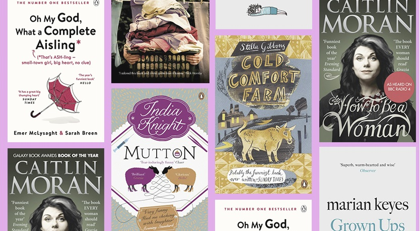

Comedy Books
CONTENT:
1.The Life and Times of the Thunderbolt Kid by Bill Bryson (2006)
I had come to loath Bill Bryson, but on holiday a couple of years ago The Life and Times of the Thunderbolt Kid was the only book around. After three pages I was laughing aloud. When was the last time a book made me do that? Actually, 1989, The Lost Continent, Bryson's first book. In between, he had become hugely successful, but his books were increasingly lazy, stuffed with stereotypes, and crushingly formulaic: cosy chuckles for tedious old farts. The Thunderbolt Kid captures the hilarious innocence of a time when men had flat-top hair cuts that left them "looking as if they were prepared in emergencies to provide landing spots for some very small experimental aircraft". There was an unbridled enthusiasm for all things atomic (from cocktails to motels and, of course, bombs) and unending culinary innovation, (spray-on mayonnaise, frozen salads, liquid instant coffee in a spray can).
2.The Life and Opinions of Tristram Shandy by Laurence Sterne (1759)
Tristram Shandy is a lesson to stand-up comedians in keeping a joke going: it's basically an incredibly protracted shaggy-dog tale, or 'cock-and-bull story' (to quote the title of the film version, which I was planning to hate on principle, except it turned out to be pretty good). The joke is that Tristram (the narrator) keeps trying to tell the story of his life, but keeps getting distracted by millions of other thoughts, and goes off into so many digressions that the author Laurence Sterne pretty much died while he was still writing it.
3.Then We Came To The End by Joshua Ferris (2007)
Extract: "Jim Jackers was hard at work on the pro bono ads and had been working on them steadily for a few hours, since his return from helping Chris Yop throw his chair into Lake Michigan. Looking up from the blank page to the blinking clock, he discovered it was only three-fifteen. He decided that today was perhaps the longest day of his life. Not only had he been called an idiot to his face, but he could do nothing to counter that opinion, because he couldn't come up with even a single funny thing to say about breast cancer."
4.The Idiot by Elif Batuman (2017)